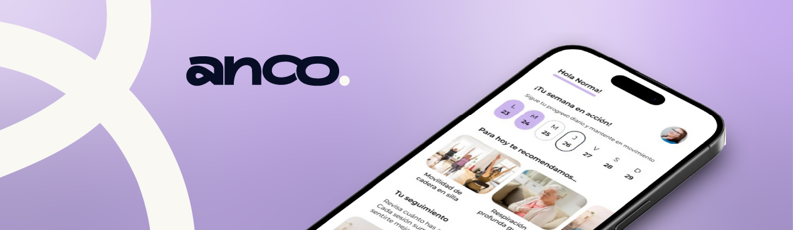
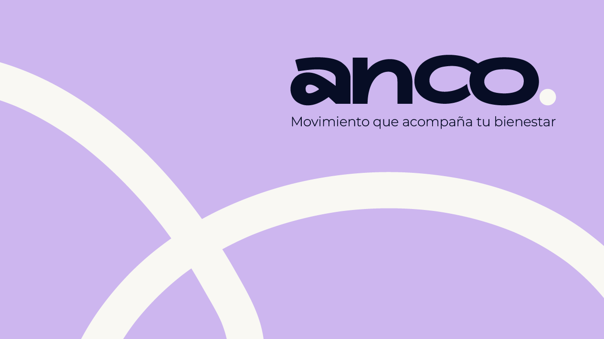
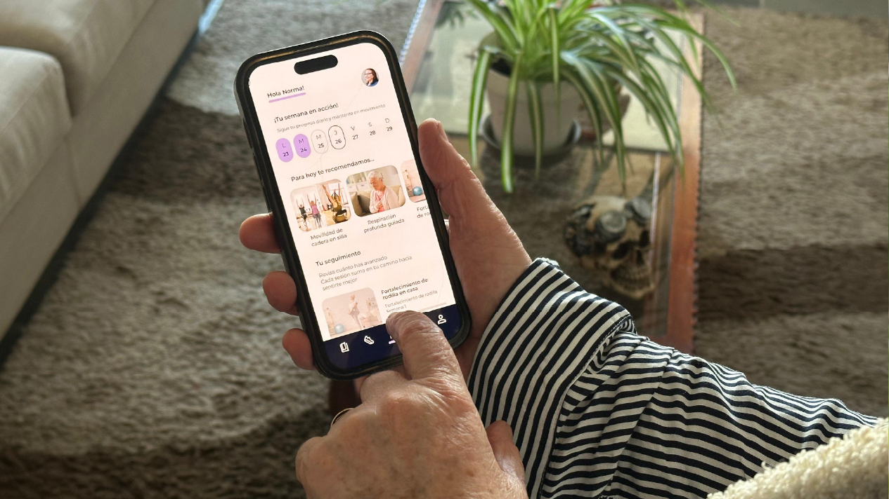
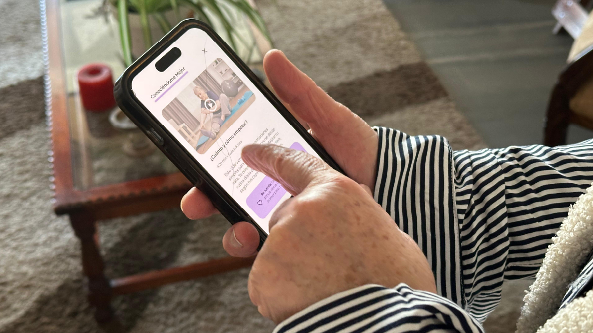
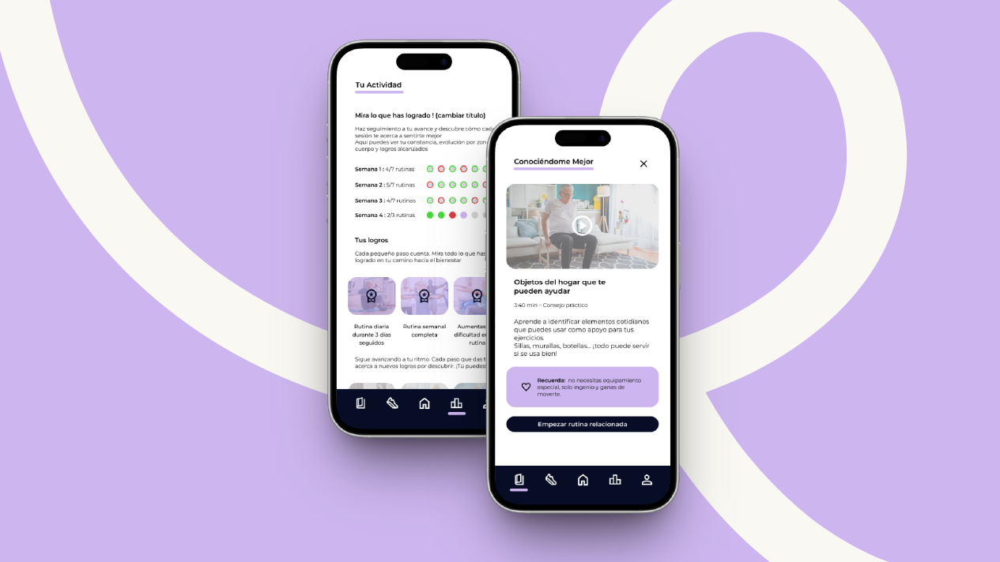

Aplicación diseñada para orientar, guiar y sostener el tratamiento kinesiológico de adultos mayores con artrosis y artritis, integrando seguimiento, educación y apoyo cotidiano

Movimiento seguro
en personas mayores
2025
Investigación, UX/UI,
Desarrollo de Prototipo
Figma, Miro
Notion, Illustrator
El aumento de adultos mayores con artrosis y artritis en Chile exige tratamientos kinesiológicos claros y sostenidos. Sin embargo, la continuidad se ve afectada por falta de orientación en casa, miedo al movimiento y una marcada fragmentación entre médicos, kinesiólogos, pacientes y cuidadores. Este escenario genera información dispersa y baja adherencia, dificultando el progreso terapéutico.
La oportunidad consiste en desarrollar una herramienta que ordene el proceso, entregue guía cotidiana y conecte a los distintos actores, permitiendo un tratamiento más claro, seguro y sostenible en el tiempo.
ANCO es una aplicación que articula tres pilares funcionales:
1. Educación accesible: contenidos claros y visuales que explican diagnóstico, dolor, ejercicios y progresión.
2. Acompañamiento guiado: rutinas de ejercicios ajustadas al nivel de dolor, recordatorios inteligentes y seguimiento diario.
3. Soporte relacional: un espacio donde el kinesiólogo puede revisar avances y donde el cuidador se integra de manera fluida en el proceso.
El objetivo es permitir que el paciente comprenda qué hacer, cuándo hacerlo y cómo avanzar con seguridad, reduciendo el miedo al movimiento y reforzando su autonomía.




Las pruebas con usuarios mostraron:
- Mejor comprensión del propósito de cada ejercicio.
- Mayor confianza para realizar actividad física en casa.
- Disminución de la percepción de riesgo asociada al movimiento.
- Interés por mantener rutinas terapéuticas con apoyo digital.
El prototipo sirvió como base para un futuro desarrollo funcional y para discutir con profesionales de salud estrategias de implementación real.